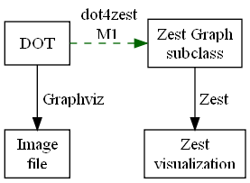

General information, documentation and resources are available at:
http://wiki.eclipse.org/Graphviz_DOT_as_a_DSL_for_Zest
Graphviz DOT as a DSL for Zest - M1

- A sample showing all that is currently supported in the DOT
input can be found in resources/input/
- Run DotImportBatch (in src-test) as Java application to
transform all DOT files in that folder (see TestBatchDotImport)
- See files in resources/tests/
for usage of individual supported features (e.g. edge styles, layout
algorithms, etc.)
- Run DotImportSuite (in src-test) as JUnit or as JUnit
Plug-in test to run all tests and transform all sample DOT files